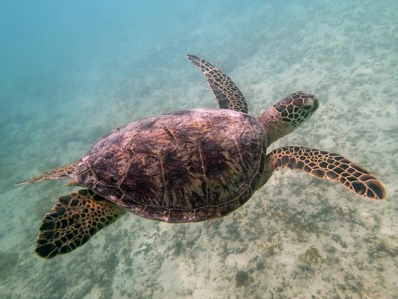
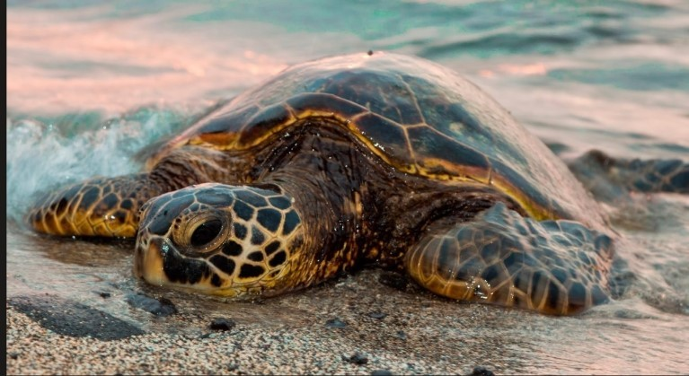
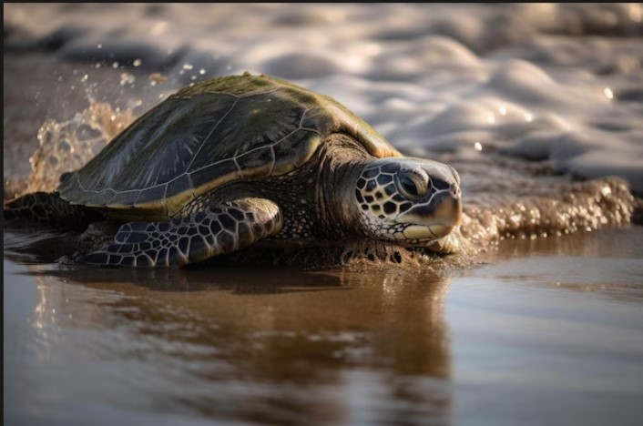
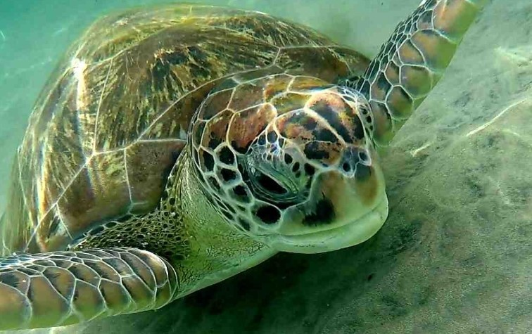
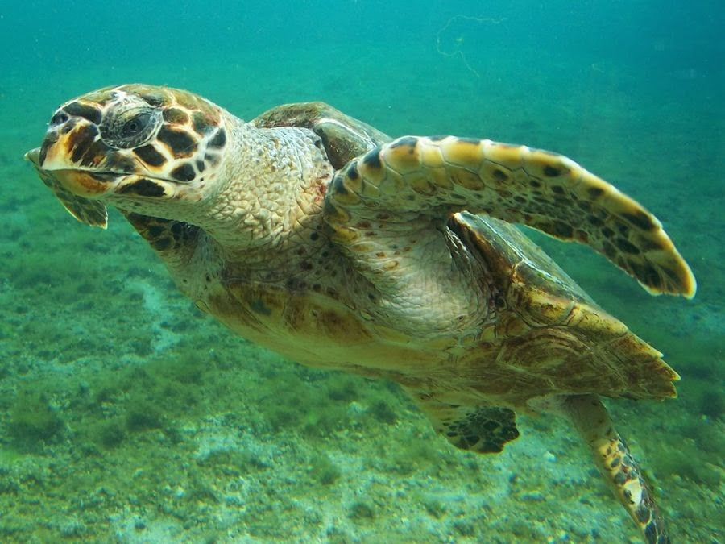
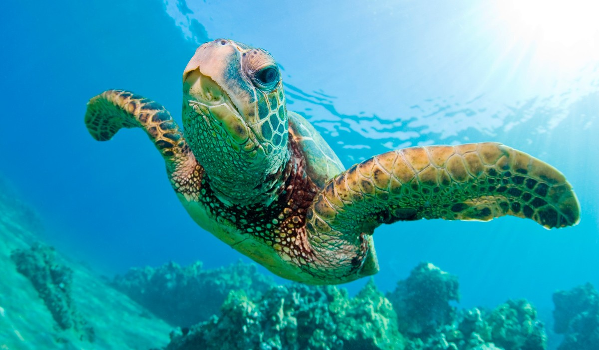

Explora el fascinante mundo de las tortugas marinas, criaturas antiguas que habitan nuestros océanos y son esenciales para el equilibrio del ecosistema marino.
Las tortugas marinas existen desde hace millones de años. Son animales migratorios que recorren grandes distancias en el océano y ayudan a mantener saludables los ecosistemas marinos.






Los arrecifes de coral son ecosistemas marinos fundamentales porque albergan una gran variedad de especies de peces, crustáceos, moluscos y otros organismos.
El blanqueamiento coralino ocurre cuando la temperatura del agua aumenta debido al cambio climático, provocando que los corales expulsen las microalgas que viven en su interior y que les proporcionan nutrientes y color.
Cuando los corales se blanquean, pierden una fuente importante de alimento y se vuelven más vulnerables a enfermedades y a la muerte. Como consecuencia, muchas especies marinas que dependen de los arrecifes para alimentarse, reproducirse o protegerse también resultan afectadas.
La pérdida de arrecifes reduce la biodiversidad marina y altera el equilibrio de los ecosistemas oceánicos. Además de afectar a los organismos marinos, el deterioro de los arrecifes impacta a las comunidades humanas que dependen de ellos para actividades como la pesca y el turismo.
Por esta razón, los científicos destacan la importancia de reducir las causas del cambio climático y promover acciones de conservación y restauración de los arrecifes de coral para proteger la biodiversidad marina y garantizar la salud de los océanos en el futuro.
Fuente: Revista Digital Universitaria (UNAM).
Referencia APA 7: Hernández Cristerna, M. J., Trejo Albuerne, A. L., Rioja Nieto, R., & Guerra Martínez, F. (2025). Arrecifes de coral y cambio climático: una relación fracturada. Revista Digital Universitaria. https://www.revista.unam.mx/ojs/index.php/rdu/article/view/2870